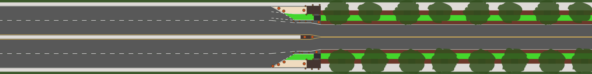
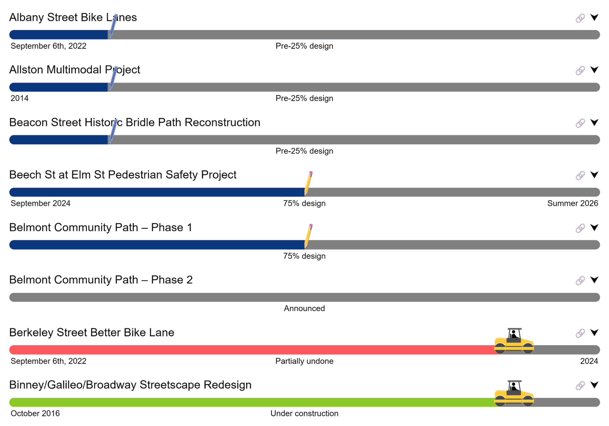
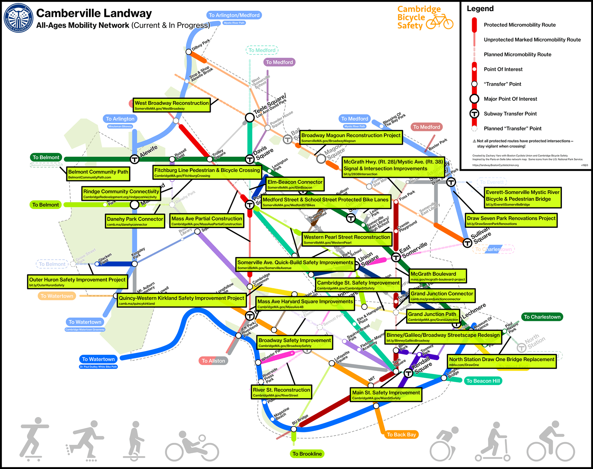

The BCU Labs Project Tracker: What Changes Are Coming To Your Street?

There is a good chance you haven't heard if or when streets you frequent or avoid will be improved. Confusing jurisdiction lines, waiting for details two hours into a meeting, and Mayor Wu reportedly holding up nearly all streets projects (Safe Streets Can't Wait!) can all make it difficult to stay up-to-date. Even cities like Somerville and Cambridge, whose respective Safe Streets and Cycling Safety Ordinances legally mandate city-wide timelines, don't always communicate every street's timeline.
Until now, there has been no central location for finding the status of streets projects in Greater Boston. BCU Labs is excited to announce we have built a dashboard tracking as many micromobility projects as we can find, giving you a single place to find where streets and paths are being improved.

On the project tracker you can select the drop-down arrow next to any project to see further details, or select the 🔗 link icon to go to the official project page. Depending on the state of the project, there may be a published plan you can review. If you see anything in the plans that concerns you, or you want to know more, email the project team! Your personal experience with your neighborhood streets is invaluable feedback, and your input can improve the final design.
We also hope to use this data to investigate trends in these projects. Which cities completed the most projects last construction season? Which projects tend to have the longest delays? Which design firms present the best, safest, or most innovative plans? Do particular construction contractors tend to get overbooked? Which cities get the best results from their contractors?
The project tracker complements our other projects: Our stress map shows the current biking stress level of local streets, while our landway page shows where some of these projects will connect gaps in the network to enable cross-town connections.

We want to continue to make this tool more useful for everyone who wants to be aware of upcoming street changes. If you'd like to help us develop it or track projects in your area, please join BCU Labs!
Also posted to Boston Cyclists Union, Bluesky, Facebook, Mastodon, and Twitter.